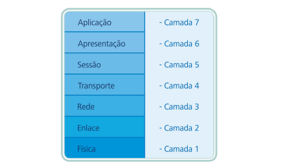
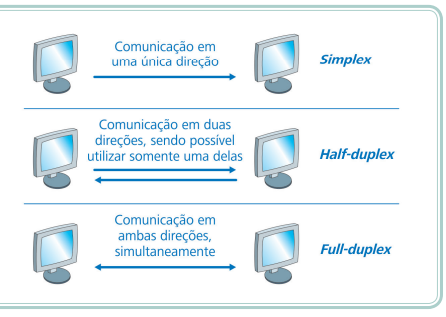
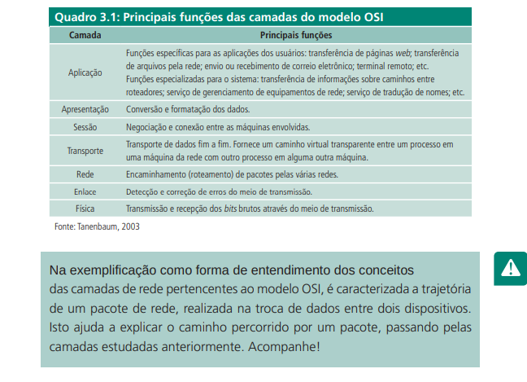
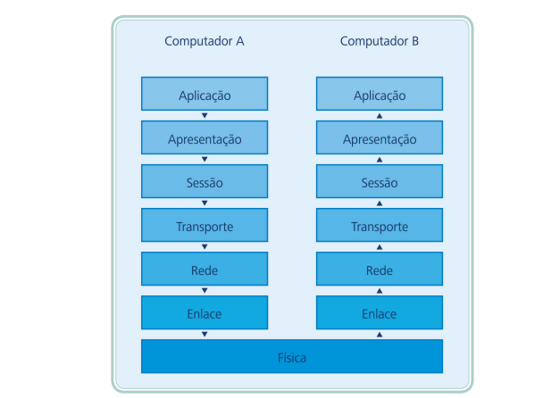

O modelo de referência ISO/OSI não determina uma arquitetura de rede específica, apenas define um modelo ou padrão que pode ser seguido para a construção de uma arquitetura de rede. A importância da discussão do modelo de referência OSI está, principalmente, na forma como os conceitos estão organizados em camadas com funções bem definidas. Entender o modelo OSI significa compreender o desafio envolvido na comunicação entre computadores com visão de diferentes níveis ou camadas de abstrações envolvidas.
O modelo OSI está organizado em sete camadas bem definidas: física, enlace, rede, transporte, sessão, apresentação e aplicação. Cada camada tem como objetivo abstrair a complexidade das camadas inferiores, com funções definidas e formas de usar os recursos da camada imediatamente inferior. Uma camada fornece à camada superior um serviço através de uma interface simplificada.
A camada física fornece as características mecânicas, elétricas, funcionais e de procedimentos para manter conexões físicas para a transmissão de bits entre os sistemas ou equipamentos.
A camada física trata apenas de permitir transmissão de bits de dados, na forma de sinais elétricos, ópticos ou outra forma de onda eletromagnética. Na camada física não há qualquer controle de erros de transmissão.
Estão incluídos na camada física os meios de transmissão: cabos metálicos (transmissão de sinais elétricos), cabos ópticos (transmissão de ondas luminosas), entre outros e os componentes de hardware envolvidos na transmissão: interfaces, hub, hardware para transmissão de ondas no espectro eletromagnético (rede sem-fio), etc. Na camada física são tratadas questões como taxa de transferência de bits, modo de conexão (simplex, half-duplex, full-duplex), topologia de rede, etc.
O objetivo da camada de enlace é detectar e opcionalmente corrigir erros de transmissão da camada física, assim convertendo um canal de transmissão não confiável em um canal confiável, para uso pela camada de rede, logo acima.
Para se conseguir um canal de transmissão confiável na camada de enlace, geralmente são usadas algumas técnicas de identificação ou correção nos quadros de bits transmitidos, por meio de inclusão de bits redundantes. A correção ou retransmissão de um quadro, quando detectado um erro, é opcional e geralmente é deixada para as camadas superiores do modelo.
A camada de enlace também tem a função de prover um mecanismo de controle de fluxo. Essa função controla o envio de dados pelo transmissor de modo que o receptor não seja inundado com uma quantidade de dados que não consiga processar (SOARES, et al., 1995).
A camada de rede deve fornecer à camada de transporte um meio para transferir datagramas (também chamados de pacotes dependendo do contexto) pelos pontos da rede até o seu destino. Os datagramas (ou pacotes) são unidades básicas de dados, fragmentos de dados das camadas superiores ou aplicações, com os cabeçalhos necessários para a transmissão. Nessa camada temos o conceito de encaminhamento (ou roteamento) de datagramas, que trata da forma como os datagramas devem ser encaminhados (roteados) pelos nós (roteadores) da rede, de um computador de origem a um computador de destino
A camada de rede oferece duas classes de serviços: orientados à conexão e não orientados à conexão. No serviço orientado à conexão primeiramente, um transmissor e um receptor estabelecem uma conexão. Todos os pacotes transmitidos posteriormente entre eles são pertencentes àquela conexão (circuito) e normalmente, seguem o mesmo caminho. No serviço de datagrama não orientado à conexão, cada datagrama enviado é independente dos enviados anteriormente, sem estabelecimento de conexão. Cada datagrama contém em seu cabeçalho a informação do endereço do transmissor (origem, remetente do pacote) e do receptor (destinatário). Os nós intermediários (roteadores) se encarregam de selecionar o melhor caminho e encaminhar (rotear) os datagramas (pacotes) do transmissor (remetente) até o receptor (destinatário) (SOARES, et al., 1995).
Até agora, na camada de rede e inferiores, a transferência ocorre, de fato, apenas entre os nós (máquinas) próximos na rede. A camada de transporte, por outro lado, permite que os dados trafeguem em um circuito virtual direto da origem ao destino, sem preocupar-se com a forma que os pacotes de dados viajam na camada de rede e inferiores. A camada de transporte, dessa forma, é responsável pela transferência fim a fim de dados entre processos de uma máquina de origem e processos de uma máquina de destino.
A transferência de dados, na camada de transporte, ocorre de modo transparente, independente da tecnologia, topologia ou configuração das redes nas camadas inferiores. É tarefa da camada de transporte cuidar para que os dados sigam ao seu destino sem erros e na sequência correta, condições para que se crie a ideia de um caminho fim a fim.
Além da detecção e recuperação de erros e controle da sequência dos dados, outras funções desta camada são: multiplexação de conexões e controle de fluxo. A multiplexação permite que vários processos diferentes nas máquinas de origem e destino troquem dados ao mesmo tempo. Os pacotes de dados de vários processos de uma máquina de origem são enviados para vários processos em uma máquina de destino.Como o meio, usado nas camadas inferiores é compartilhado, os pacotes de dados precisam ser multiplexados (escalonados, embaralhados, misturados), de modo que se tem a impressão de que as transferências ocorrem simultaneamente, em paralelo. Para que isso ocorra, a camada de transporte possui mecanismos para identificar cada pacote ao seu devido fluxo de dados entre os processos.
O controle de erros possui mecanismo para identificar erros de transmissão (pacotes com dados corrompidos, por exemplo) e prover a recuperação desse erro, seja por meio da retransmissão do pacote ou outra forma de reconstrução da informação do pacote. O controle de sequência visa garantir a ordem correta da informação, independentemente da ordem em que os pacotes de dados chegaram ao destino.
O controle de erros possui mecanismo para identificar erros de transmissão (pacotes com dados corrompidos, por exemplo) e prover a recuperação desse erro, seja por meio da retransmissão do pacote ou outra forma de reconstrução da informação do pacote. O controle de sequência visa garantir a ordem correta da informação, independentemente da ordem em que os pacotes de dados chegaram ao destino.
A camada de sessão possui mecanismos que permitem estruturar os circuitos oferecidos pela camada de transporte. As principais funções da camada de sessão são: gerenciamento de token, controle de diálogo e gerenciamento de atividades.
O gerenciamento de token é necessário em algumas aplicações, quando a troca de informações é half-duplex, ao invés de full-duplex. O gerenciamento de token permite que apenas o proprietário do token possa transmitir dados naquele momento. O controle de diálogo usa o conceito de ponto de sincronização. Quando a conexão para a transferência de dados de uma aplicação é interrompida, por erro, a transferência pode ser reestabelecida do ponto onde havia parado.
O conceito de atividade permite que as aplicações ou serviços oferecidos aos usuários coordenem as partes constituintes da transferência de dados. Cada atividade possui um conjunto de dados que devem ser trocados entre o serviço na origem e na aplicação de destino. Apenas uma atividade é executada (dados transmitidos) por vez, porém, uma atividade por ser suspensa, é reordenada e retomada
A camada de apresentação cuida da formatação dos dados, transformação, compressão e criptografia. Não há multiplexação de dados na camada de apresentação. O propósito desta camada é converter as informações que são recebidas da camada de aplicação para um formato “entendível” na transmissão desses dados. Como exemplo de conversão, estão os caracteres diferentes do padrão usual ASCII que precisam ser “tratados” ou quando os dados recebidos são criptografados sobre diferentes formas de criptografia, desta forma também sendo necessário uma conversão destes dados (SILVA, 2010)
Na camada de aplicação estão os aplicativos, propriamente ditos, dos usuários ou os serviços dos sistemas. Esta camada cuida da comunicação entre as aplicações, sendo que cada aplicação possui protocolos específicos de comunicação. As aplicações que oferecem recursos aos usuários ou aos sistemas mais conhecidos atualmente são aquelas que oferecem serviços no padrão da internet: aplicação para navegação; transferência de arquivos; transferência de e-mail, terminal remoto e outros. A camada de aplicação diz respeito, também, aos protocolos usados na comunicação de dados entre essas aplicações. No Quadro, é feito um resumo comparativo entre as principais funções das camadas no modelo OSI. As funções aqui tratadas quanto ao modelo OSI, são consideradas de modo conceitual e separadas uma das outras.
  arquitetura TCP/IP